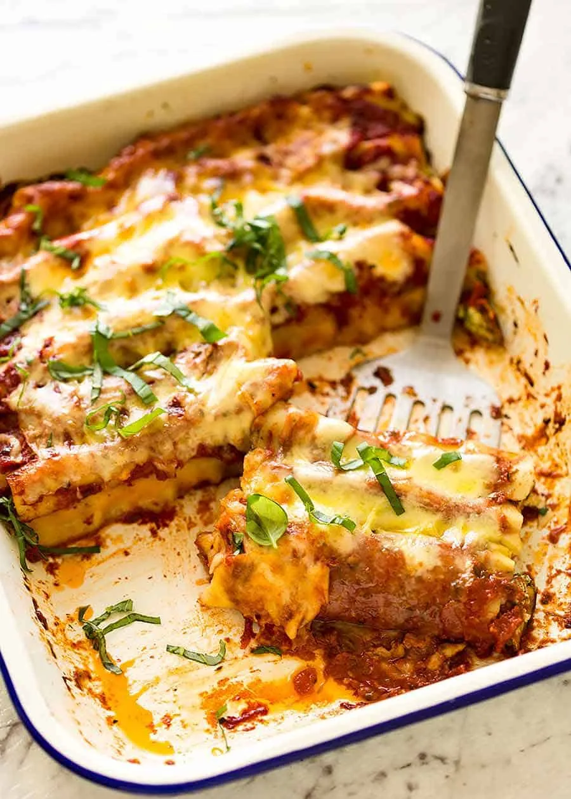

Spinach and Ricotta Cannelloni recipe

Ingrediends :
- Tomato sauce
- Salt
- Pepper
- 1 Oinon
- 2 table-spoon of Olive oil
- 2 eggs
- 1 canneloni box
- 350g of minced meat
- 150g of saussage flesh
- 125g of mozzarella
- Heat the olive oil into a pan and put the oinons. Let the oinons cook at medium heat for 10m
- Mix the minced meat and the saussages flesh with a robot hand.
- Into a bowl, mix the meats, the eggs, the salt and the pepper
- cook the mix into the pan for 10m, And extract le left over juce as much as possible
- ....
- put some...
- make it....